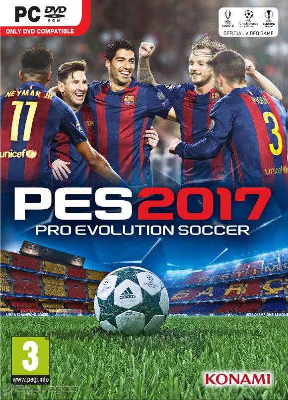

|  |
PES-2017PRO EVOLUCION SOCCER PESO 7.7GB GENEROS | Deporte Fútbol PLATAFORMA | PC DISTRIBUIDOR | Konami DESARROLLADOR | Konami LANZAMIENTO | 15 de Septiembre del 2016 |
Pes 2017 regresa este año y busca ser el numero 1 en su género, desarrollado por Konami, Pes 17 busca ser el mejor simulador de fútbol del mundo. Konami y la saga Pro Evolution Soccer busca regresar al trono de la simulación de fútbol con PES 2017, su videojuego de fútbol para la temporada 2016-2017. Entre las mejoras propuestas por Konami están las gráficas en Fox Engine y la tecnología Real Touch, que ha evolucionado con respecto a las vistas en el PES 2016. Cuenta con la posibilidad de jugar partidos once contra once e importantes cambios en los sistemas de pase y portero.